Rails End Open Jam (Liquor Pie Lizards)
Rails End Beer CompanyBroomfield
1st & 3rd Monday
6:00 PM to 9:00 PM
- House band Yes
- Signup
- no signup required; bring your instrument
- Host
- Liquor Pie Lizards
11625 Reed Ct, Unit B, Broomfield, CO 80020
Blues jams are the easiest jams to walk into. The songs follow a short twelve-bar form that most players already know, so a good host can put a new player into a band within one tune.
Schedules change. Confirm with the venue or host before you go.
The music is mostly twelve-bar blues in E, A, G and C, the keys guitarists like, played as shuffles and slow blues. Bands also play a handful of standards most players can fake, like Stormy Monday, The Thrill Is Gone and Sweet Home Chicago, and someone usually calls a minor blues or a funk blues.
Most blues jams keep a paper list or a whiteboard near the stage. The host builds small bands from the list and calls players up in groups, mixing instruments so every group has drums, bass and someone playing chords.
Each group usually plays two or three tunes. The player who calls a tune names the key, counts it in and leads it. Solos go around the band once, the leader signals the last time through, and the band finds the ending together.
Rails End Beer CompanyBroomfield
1st & 3rd Monday
6:00 PM to 9:00 PM
11625 Reed Ct, Unit B, Broomfield, CO 80020
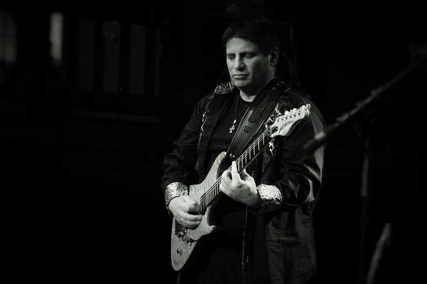
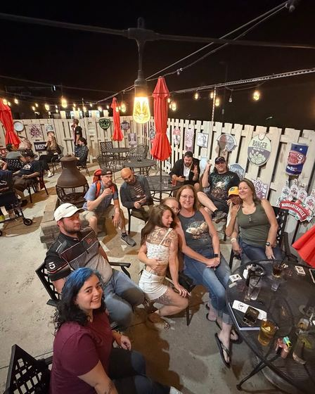
The Mirage Sports BarLittleton
Monthly (last Monday)
7:00 PM to 10:00 PM
8340 W Coal Mine Ave, Littleton, CO 80123
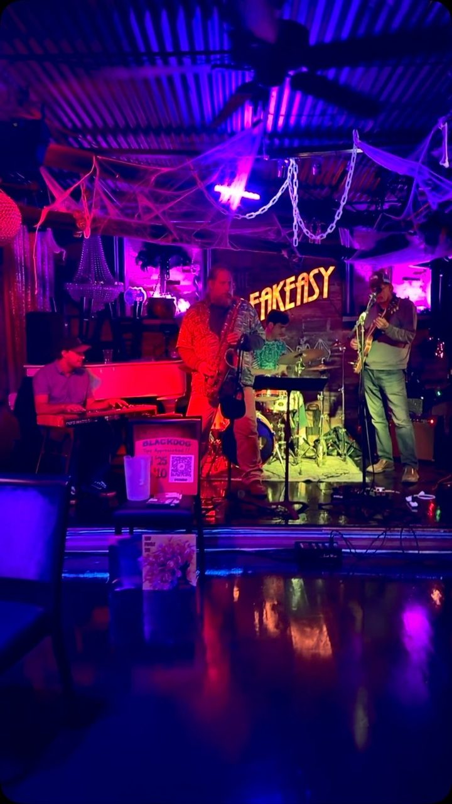
The SpeakeasyLongmont
Mondays, weekly
7:00 PM to 10:00 PM
301 Main St, Longmont, CO 80501
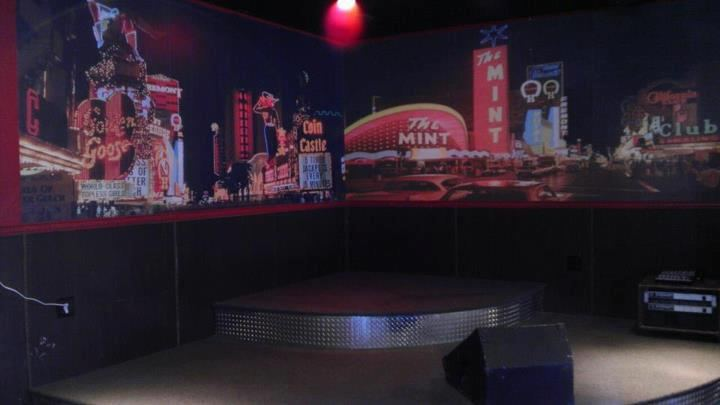
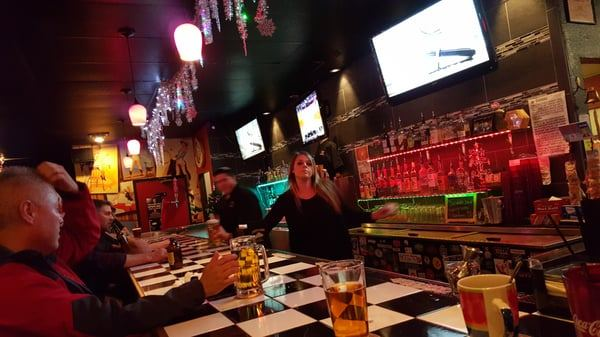
RockabilliesArvada
Tuesdays, weekly
7:00 PM to 10:00 PM
12363 W 64th Ave, Arvada, CO 80004
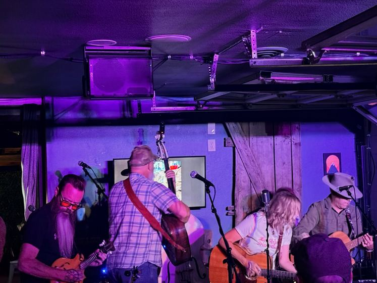
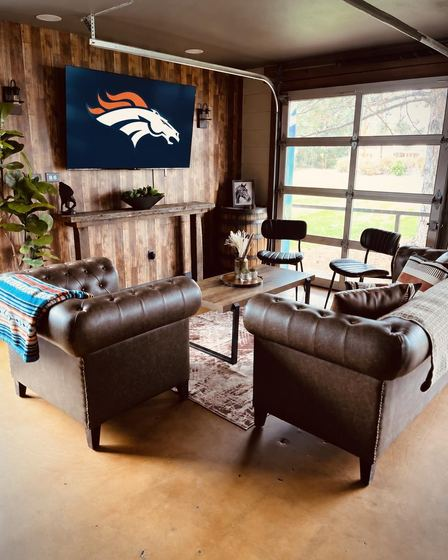
Western Sky Bar & TaproomEnglewood
Monthly (last Tuesday)
4361 S Broadway, Englewood, CO 80113
Bricks on MainLongmont
Wednesdays, weekly
6:00 PM to 9:00 PM
471 Main St, Longmont, CO 80501
Prince of Peace Church of the BrethrenLittleton
3rd Wednesday monthly
6:30 PM to 8:30 PM
7000 S Windermere St, Littleton, CO 80120
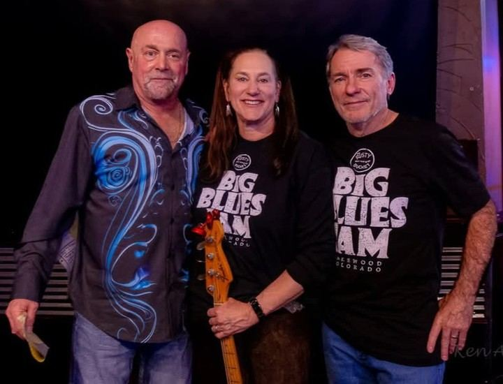
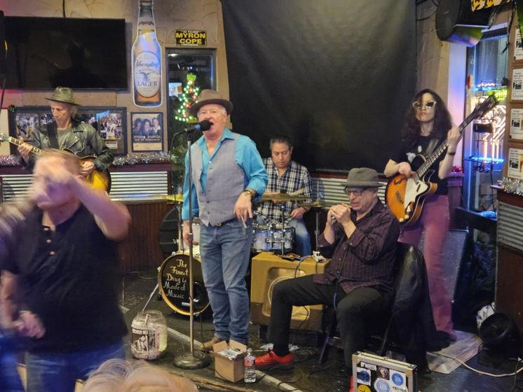
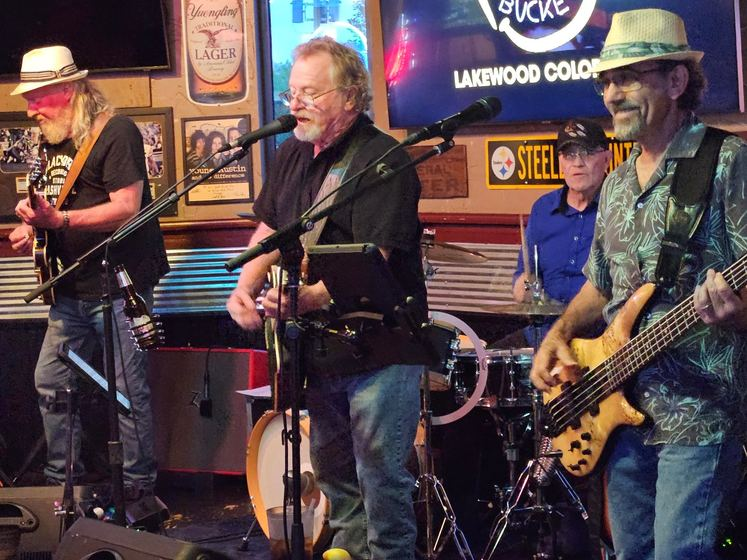
The Rusty Bucket Bar and GrillLakewood
Wednesdays, weekly
7:00 PM to 10:00 PM
3355 S Wadsworth Blvd, Unit G101, Lakewood, CO 80227
Lakewood GrillLakewood
Every other Wednesday
7:00 PM to 10:00 PM
8100 W Colfax Ave, Lakewood, CO 80214
Lincoln's RoadhouseDenver
Wednesdays, weekly
7:00 PM to 10:00 PM
1201 S Pearl St
Musical Life DenverEnglewood
Wednesdays, weekly
8:00 PM to 9:00 PM
2842 S Broadway, Englewood, CO 80113
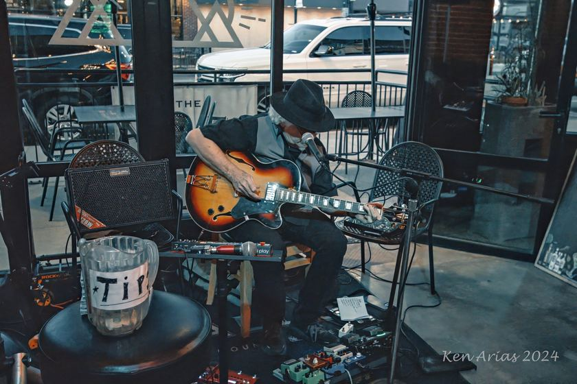
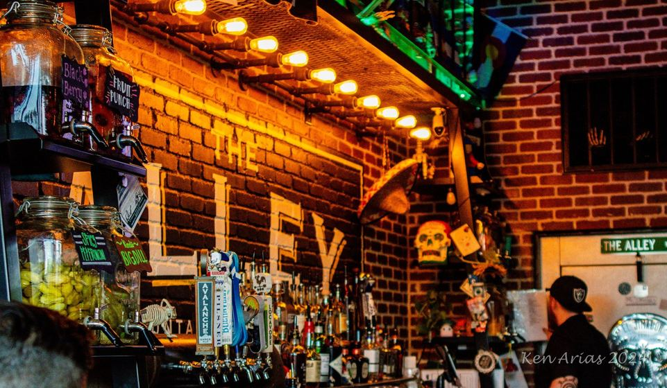
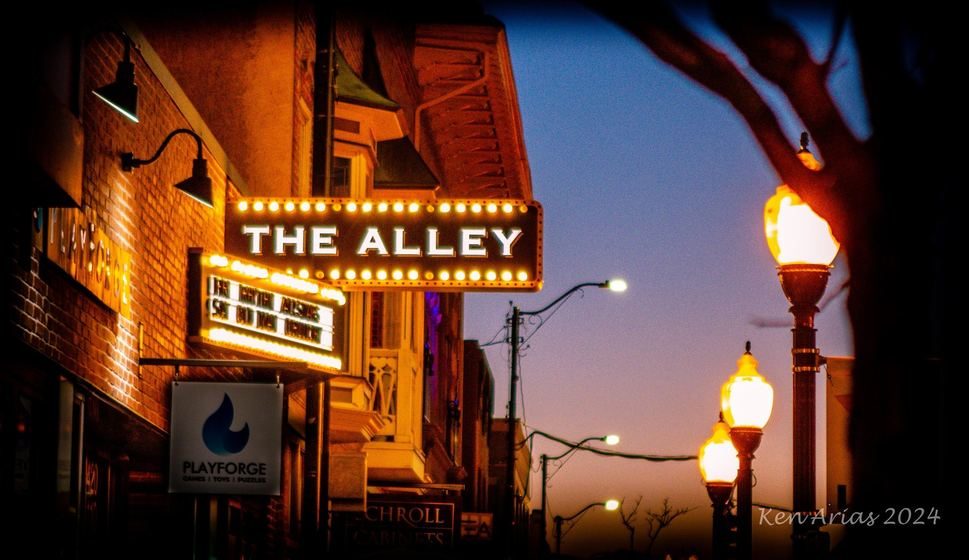
The AlleyLittleton
Thursdays, weekly
6:00 PM to 9:00 PM
2420 W Main St, Littleton, CO 80120
Dirty Dogs RoadhouseGolden
Thursdays, weekly
7:00 PM to 10:00 PM
17999 W Colfax Ave, Golden, CO 80401
Long Shots Bar and GrillWheat Ridge
Thursdays, weekly
7:30 PM to 10:30 PM
4400 Ward Rd, Wheat Ridge, CO 80033


Table Public HouseDenver
Sundays, weekly
2:00 PM to 5:00 PM
2190 S Platte River Dr
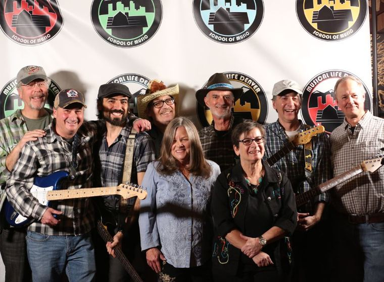
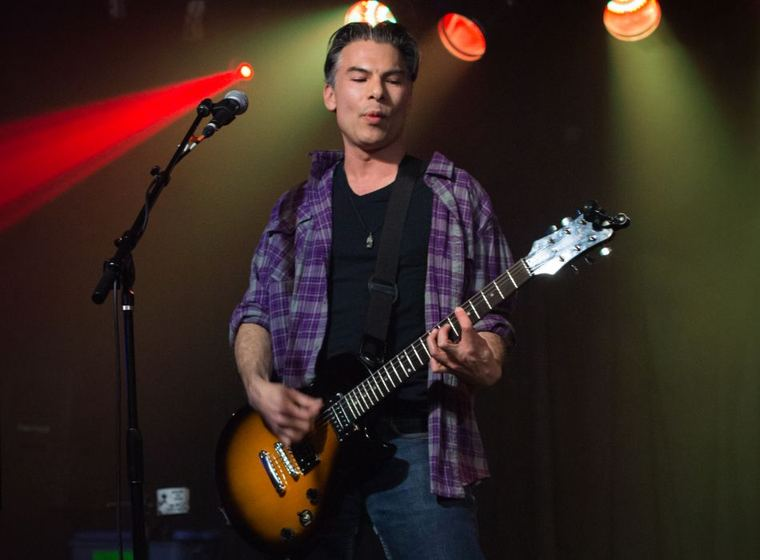
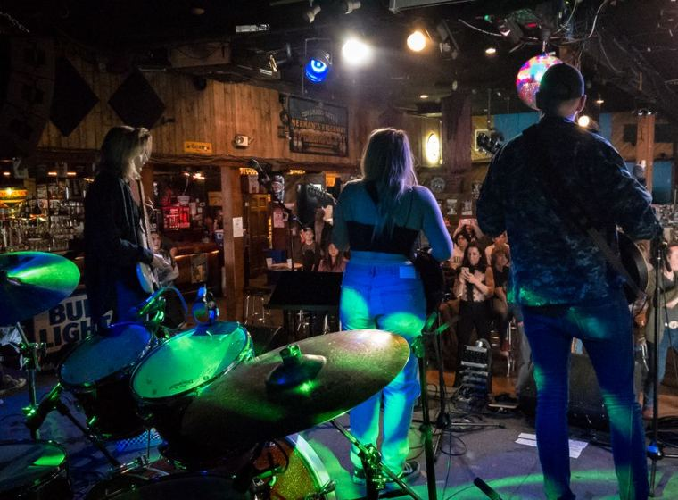
Musical Life DenverEnglewood
Sundays, weekly
6:00 PM to 7:00 PM
2842 S Broadway, Englewood, CO 80113


Goosetown TavernDenver
Sundays, weekly
6:00 PM to 9:30 PM
3242 E Colfax Ave, Denver, CO 80206
Photos belong to the people credited on them. If one is yours and you want it down, tell me and it comes down.
We work on the forms, the keys and the comping, and we rehearse calling a tune and counting it in. Guitar lessons
We learn the forms and keys that get called, and we practice following a bandleader you've never played with. Bass lessons
We drill the three or four grooves blues jams call, and we practice reading a leader you just met. Drum lessons
We build chord-chart fluency in the jam keys, then practice comping under a singer. Piano lessons
Inquire about a good teacher for you, and I'll recommend someone if I know one.
Inquire about a good teacher for you, and I'll recommend someone if I know one.
Inquire about a good teacher for you, and I'll recommend someone if I know one.
In a lesson or two before your first jam, we cover the blues forms and keys that get called, how the signup works, and how a set goes. Once you're my student, I'll help you pick the right jam, and I'll be there.
Book a lesson How a first jam goes
$75 an hour, in your home or on Zoom. You pay after the lesson.